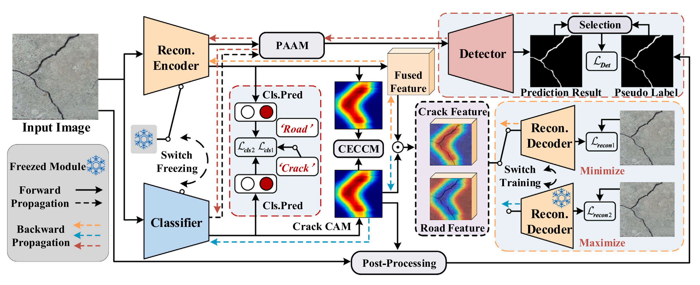

Publications
2026
 | Vehicular road crack detection with deep learning: An online benchmark for comprehensive evaluation of existing algorithms N. Ma, Z. Song, Q. Hu, C. W. Liu, Y. Han, Y. Zhang, R. Fan, L. Xie Advanced Engineering Informatics 77, 105158, 2027 Paper / Website / Dataset |
2025
 | Robust and Real-time Road Crack Detection through Collaborative Dual-Branch Learning on Robotic Sensing Platform Z. Song, N. Ma, Z. Zhang, M. J. Lee, S. Vityazev, A. Dvorkovich, R. Fan IEEE International Conference on Real-time Computing and Robotics, 2025 Paper / Code |
 | Self-Derived Multi-Modal Knowledge Distillation for Real-time Road Crack Detection N. Ma*, Q. Hu*, Z. Song*, S. Guo, R. Fan (*Equal Contribution*) IEEE Sensors Journal, 2025 Paper / Code |
 | WP-CrackNet: A collaborative adversarial learning framework for end-to-end weakly-supervised road crack detection N. Ma, Z. Song, Q. Hu, X. Tang, C. Zhang, R. Fan, L. Xie Neurocomputing, 131845, 2025 Paper / Code |